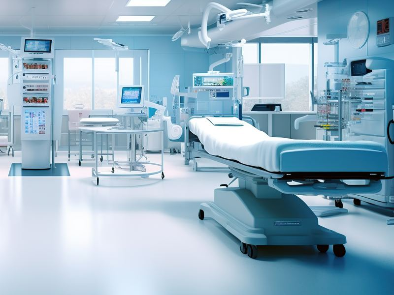
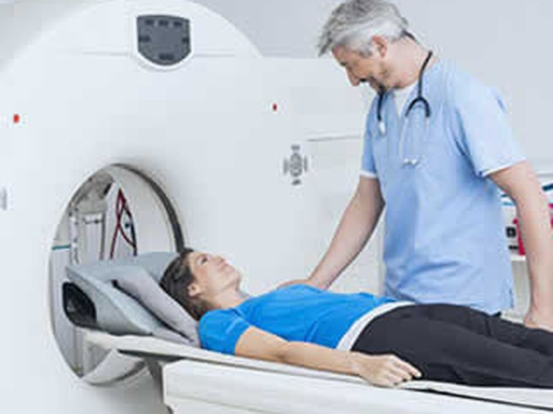
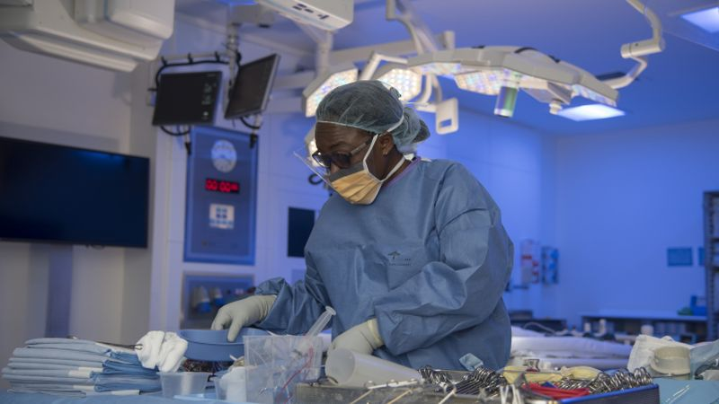

DISHAAdvanced Surgical & Laser Piles ClinicJourney towards better life
DISHAAdvanced Surgical & Laser Piles ClinicJourney towards better life
Laser Piles Treatment
Advanced laser treatment for piles (haemorrhoids) that shrinks the swelling with minimal cuts, less pain and a quick return to routine.
Know MoreDISHA Advanced Surgical & Laser Piles Clinic in Kharadi, Pune, specialises in advanced laser and laparoscopic care for piles, fissures, fistulas, hernias, gallstones and varicose veins, alongside comprehensive GI diagnostics and oncology surgery. Led by Dr. Abhijeet Suresh Shinde, MS (General Surgery), with over 10+ years of experience and 3,500+ patients treated, every consultation is private, every opinion is honest and your care stays with one surgeon.
Each one explained in plain language, with recovery guidance.
Advanced laser treatment for piles (haemorrhoids) that shrinks the swelling with minimal cuts, less pain and a quick return to routine.
Know More
Treatment for piles matched to the grade, from diet and medicines to rubber-band ligation, stapler and surgical removal.
Know More
Relief for the sharp, tearing pain of an anal fissure with ointments, Botox or a short procedure such as lateral sphincterotomy.
Know MoreAssessment of anal fistula, with MRI where needed, and repair chosen to cure the tract while protecting bowel control.
Know More
Safe laparoscopic gallbladder removal for painful gallstones, with a clear treatment plan, quick recovery and compassionate support throughout your care.
Know More
Mesh-based hernia repair using open or laparoscopic techniques, selected for your hernia type, age and lifestyle to reduce the chance of recurrence.
Know More
Prompt laparoscopic appendectomy for appendicitis, with round-the-clock access to surgeons and a quick, comfortable recovery after the operation.
Know More
Advanced endoscopic removal of kidney and ureteric stones, planned around stone size, position and your risk of recurrence for lasting relief.
Know More
Safe day-care removal of lipomas, cysts and soft-tissue lumps after proper assessment, with neat stitching and minimal scarring for a natural result.
Know More
Safe, hygienic circumcision for medical reasons using modern techniques, with private and comfortable care.
Know More
Minimally invasive keyhole procedures performed through tiny incisions, offering less pain, minimal scarring and a faster return to your normal routine.
Know More
Treatment of painful, discharging sinuses at the top of the buttock cleft, from minimal procedures to flap repair.
Know MoreBrowse every department. Each procedure has its own detailed page.
Piles, fissure, fistula and more with laser and modern techniques
Keyhole surgery and abdominal care for faster recovery
Stones, prostate, urethra, hydrocele and circumcision care
Lumps, thyroid, abscess, corn and toenail surgery
Scopes, urgent GI surgical care and diabetic foot surgery
Six reasons patients trust Disha Clinic.
Dr. Shinde is a general & laparoscopic surgeon and consultant proctologist.
Advanced laser, stapler and keyhole options chosen to suit you.
A clear opinion on whether you need surgery, with no pressure.
Discreet consultations in a comfortable, judgement-free setting.
Open daily from 10 AM to 9 PM for easy appointments.
The surgeon who examines you operates and follows up your recovery.

Learn the warning signs of gallstones, how they are diagnosed and when keyhole surgery is the right choice for you.
Read ArticleNot sure whether your anal pain or bleeding is piles or a fissure? Here is a simple guide to tell them apart.
Read Article
A practical day-by-day guide to recovery after keyhole surgery, including diet, activity, wound care and warning signs.
Read ArticleLaser usually means less pain, minimal bleeding and quicker recovery, but the best choice depends on your grade and anatomy. Dr. Shinde will explain this after examination.
Not always. Early piles often improve with diet, fluids and medicines. Surgery is advised only when needed.
Yes. Examinations are private, gentle and respectful.
We are open daily from 10:00 AM to 9:00 PM. Call +91 97668 15782 to book.
Talk to our surgeon today. Honest advice, no pressure.